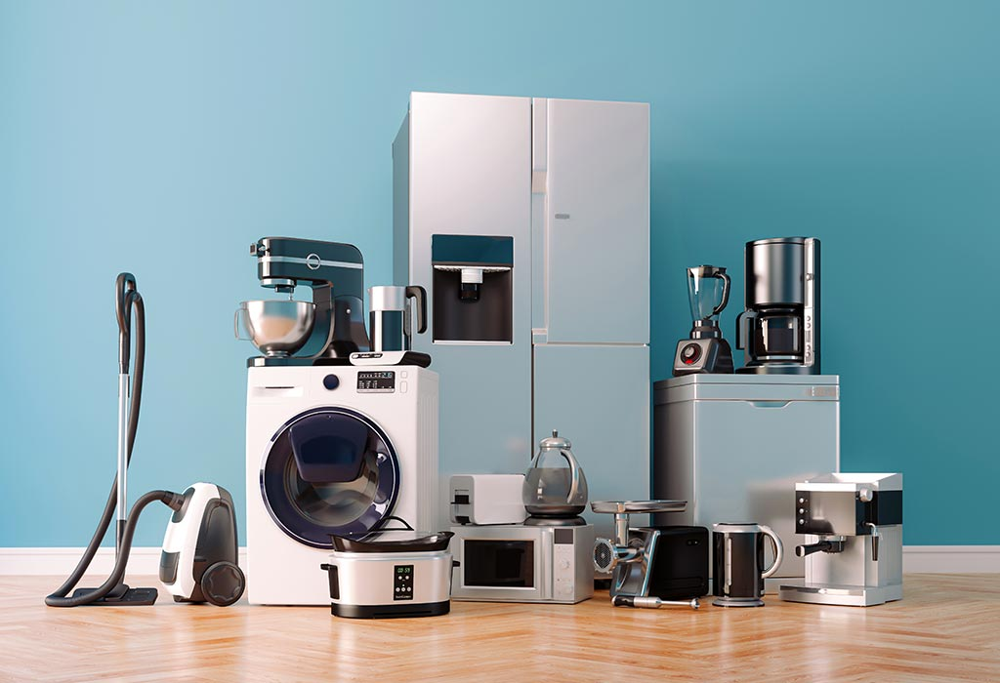

Water Quality Guide
Water Purifier Buying Guide for Kathmandu Homes (2026)

A reliable water purifier is one of the most important health-focused appliances for urban families. In Kathmandu, buyers often compare RO, UV, UF, and storage systems but struggle to decide which configuration is practical for daily use and maintenance.
This guide explains what to check before purchasing a purifier so you can choose a system that supports safe drinking water, easy upkeep, and long-term household convenience.
Understanding RO, UV, and UF purification
Each technology has a role, and many modern purifiers combine them for better outcomes.
| Technology | Purpose | Best use case |
|---|---|---|
| RO | Removes dissolved impurities and salts through membrane filtration | Useful when dissolved solids are a concern |
| UV | Uses ultraviolet light to neutralize microorganisms | Useful when microbiological safety is prioritized |
| UF | Membrane-based filtration for suspended particles and microbes | Helpful as an additional stage in multi-step systems |
Choosing storage capacity for your family
Storage needs depend on household size, daily consumption, and usage habits. Families that use purified water for drinking and cooking usually need larger effective storage than homes where only drinking water is filtered.
- Smaller family setups can use compact storage if refill cycles are consistent.
- Medium to large families should evaluate faster recovery and larger tank capacity.
- Homes with guests or office-style use should prioritize higher throughput.
Maintenance planning before purchase
The right purifier is one you can maintain consistently. Ask about filter replacement intervals, estimated annual maintenance, service network quality, and spare-part availability before finalizing purchase.
- Check how many filtration stages require periodic replacement.
- Confirm local service support in Kathmandu and nearby areas.
- Choose models with clear maintenance indicators where possible.
Water purifier and dispenser models to compare
Explore these relevant product pages at Shisham Homes:
- Kent Grand Plus Water Purifier
- Kent Ace Water Purifier
- Kent Maxx Water Purifier
- Kent Marvel Water Purifier
- Forbes Nectar Water Purifier
- Forbes Aeon Water Purifier
- Signoracare Small Hot and Cold Water Dispenser
Frequently asked questions
Do I need a purifier with storage?
For many homes, yes. Storage helps ensure consistent access to drinking water during peak use periods.
Is a multi-stage purifier better than a basic system?
Usually, multi-stage purification gives better overall treatment, but final selection should reflect local water conditions and maintenance comfort.
Should I compare annual maintenance cost before buying?
Yes. Long-term service and replacement cost are essential to evaluating true value.